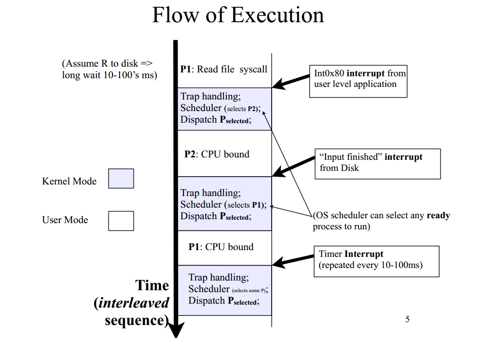

Concurrent, Asynchronous, Efficient
beautiful
by Roksana Seletska, Levi9
About me
Rocksy seletska

Software engineer
Scala JS Go
Open water diver
mail to: rocksyseletska2837@gmail.com
Previous talk
Scala intro, monads
Major spoiler
It is not about shared mutable state!
We won't be talking about semaphores, mutexes, monitors or locks
Well, maybe a bit
What is sad about concurrency?
Concurrent doesn't mean parallel
Concurrent execution only means soma amount of tasks to be executed in some time frame
... but not neccesary at the same time
Concurrency starts when you don't have enough cores for each process/thread
Native threads
Managed by OS, so this 'managment' implementation heavily depends on OS
Kernel-level sync on critical sections
Really supports multiple CPUs
if a system has n CPUs, then up to n threads can run simultaneously
Pre-emptive scheduling
Scheduler has prioraized queue of threads and switches time to time
Time slice or quantum
Context switch
- Decide whether to do a context switch
- Save process with context
- Find best process to execute
- Restore context
Trap(int 0x80)
Summary
Threads may be executed parallel
Switching is really heavy, critical section means major bottleneck
Thread will be interrupted on time slice end
Scheduler and theads amount limit is OS dependent
is it deep enough?
Non preemptive multitasking

Green threads
It is run as one native thread!
Yet, it can be concurrent
Scheduling and switching is managed by Virtual Machine or lib
Quite deterministic scheduling, language dependent
Lightweight since no kernel objects are created
Large number of threads can be started
Goals
Small memory footpint
Memory size is a parameter to VM or library
Controllable switching
Here were scheduler concept appears
Is easy to create
You only need to reserve memory and being put into scheduler queue
Greenlets - Python
Not a native feature of a language
Pretty low level
Based on coroutines
Generator
Intended to generate values on demand
def get_primes(number):
while True:
if is_prime(number): #you know how to check it, right?
yield number
number += 1
#Example of usage
primes_up_to_2000 = for next_prime in get_primes(3)
if next_prime > 2000 return
#Result [1,2,3,5,7,11...]
Coroutine
Intended to consume values
def grep(pattern):
print "Looking for %s" % pattern
while True:
line = (yield)
if pattern in line:
print line,
g = grep("python")
# Notice how you don't need a next() call here
g.send("Yeah, but no, but yeah, but no")
g.send("A series of tubes")
g.send("python generators rock!") # this will be printed
Pipeline masterpiece
def follow(thefile, target):
thefile.seek(0,2) # Go to the end of the file
while True:
line = thefile.readline()
if not line:
time.sleep(0.1) # Sleep briefly
continue
target.send(line)
# A filter.
@coroutine
def grep(pattern,target):
while True:
line = (yield) # Receive a line
if pattern in line:
target.send(line) # Send to next stage
# A sink. A coroutine that receives data
@coroutine
def printer():
while True:
line = (yield)
print line,
# Broadcast a stream onto multiple targets
@coroutine
def broadcast(targets):
while True:
item = (yield)
for target in targets:
target.send(item)
# Example use
if __name__ == '__main__':
f = open("access-log")
p = printer()
follow(f,
broadcast([grep('python',p),
grep('ply',p),
grep('swig',p)])
)
Greenlet
from greenlet import greenlet
def test1():
print 12
gr2.switch()
print 34
def test2():
print 56
gr1.switch()
print 78
gr1 = greenlet(test1)
gr2 = greenlet(test2)
gr1.switch()
Cooperative multitasking on coroutines is as simple as this:
We know exactly when coroutine ends, on yield
When it happens scheduler just selects a next coroutine to be executed
#class to incapsulate coroutine itself with meta and target coroutine
#Coroutines shouldn't create a loop
class Task(object):
taskid = 0
def __init__(self,target):
Task.taskid += 1
self.tid = Task.taskid # Task ID
self.target = target # Target coroutine
self.sendval = None # Value to send
# Run a task until it hits the next yield statement
def run(self):
return self.target.send(self.sendval)
#Deterministic scheduler
class Scheduler(object):
def __init__(self):
self.ready = Queue()
self.taskmap = {}
def new(self,target): #create new task and schedule it
newtask = Task(target)
self.taskmap[newtask.tid] = newtask
self.schedule(newtask)
return newtask.tid
def schedule(self,task):
self.ready.put(task)
#start scheduling
def mainloop(self):
while self.taskmap:
task = self.ready.get()
result = task.run()
self.schedule(task)
# ------------------------------------------------------------
# === Example ===
# ------------------------------------------------------------
# Two tasks
def foo():
while True:
print "I'm foo"
yield
def bar():
while True:
print "I'm bar"
yield
# Run them
sched = Scheduler()
sched.new(foo())
sched.new(bar())
sched.mainloop()
# i'm foo
# i'm bar
Goroutines, Go
it is gopher

Goroutines are also coop-multitasking
Original language feature
Motivation - i still want parallelism!
Goroutines multiplexes on OS threads, so even if any will be block, other goroutines can still be executed
func f(from string) {
for i := 0; i < 3; i++ {
fmt.Println(from, ":", i)
}
}
func main() {
// Suppose we have a function call `f(s)`. Here's how
// we'd call that in the usual way, running it
// synchronously.
f("direct")
// To invoke this function in a goroutine, use
// `go f(s)`. This new goroutine will execute
// concurrently with the calling one.
go f("goroutine")
// You can also start a goroutine for an anonymous
// function call.
go func(msg string) {
fmt.Println(msg)
}("going")
// Our two goroutines are running asynchronously in
// separate goroutines now, so execution falls through
// to here. This `Scanln` code requires we press a key
// before the program exits.
var input string
fmt.Scanln(&input)
fmt.Println("done")
}